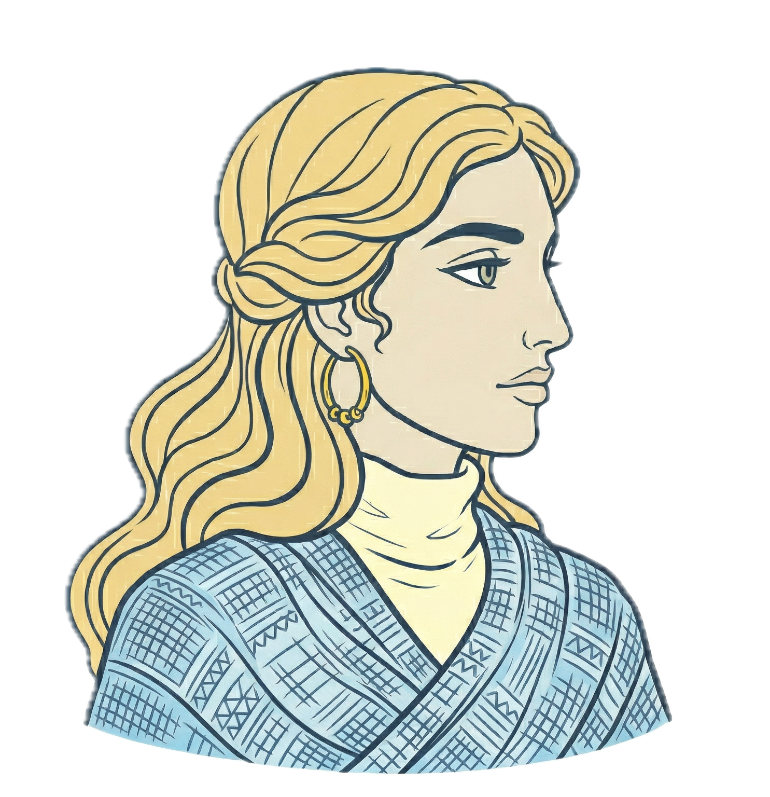
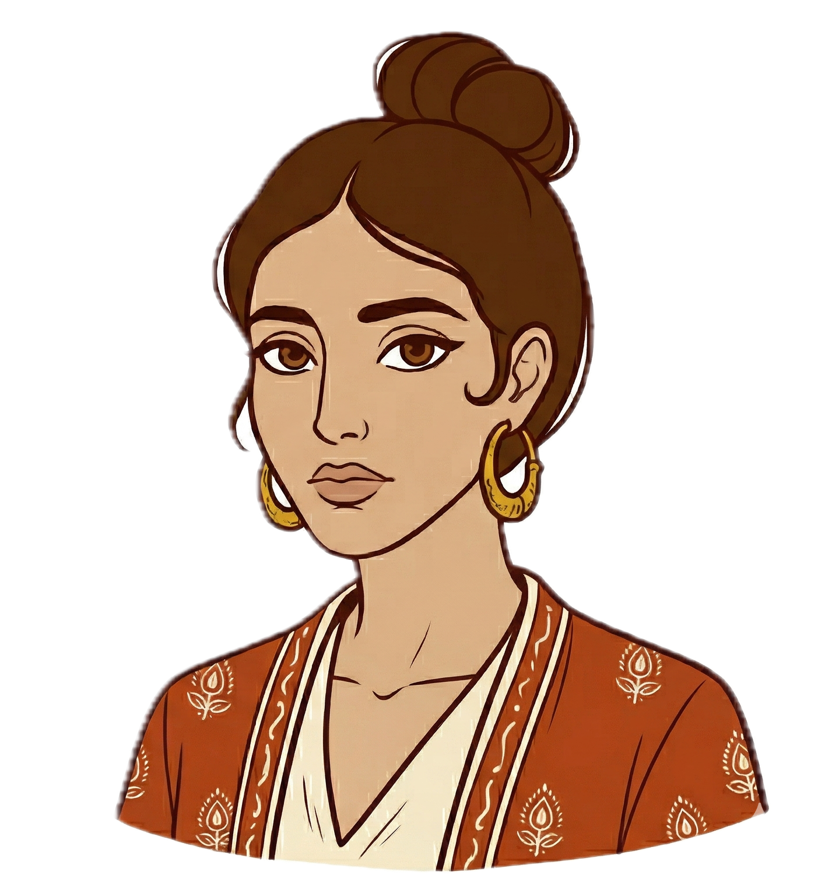

Grèce · Portugal · 2008–2023

23 ans en 2008. Son État dépense 11 107 € par habitant. La même tempête arrive pour elle et pour Sofia.

23 ans en 2008. Son État dépense 7 716 € par habitant. Moins — mais avec une autre façon de protéger.
Au sommet de la croissance. La santé et la protection sociale absorbent plus de la moitié des dépenses.
Moins en valeur absolue. Mais une part proportionnellement plus grande consacrée aux filets de sécurité.
La ligne "soutien à l'économie générale" (renflouement des banques) passe de 0,6 à 20,5 Md€. L'argent qui aurait pu protéger Eleni.
La protection sociale portugaise augmente pendant la crise, de 27,3 à 33,2 Md€. Sofia garde son filet.
2023 — leurs gouvernements dépensent désormais
Leurs gouvernements dépensent aujourd'hui la même somme.
Pour l'une, la crise est un souvenir.
Pour l'autre, elle dure encore.
La différence n'est pas dans la somme, mais dans la répartition.
Sources : OCDE COFOG · OCDE Well-being Data Monitor · Eurostat · Hackaviz Toulouse 2026